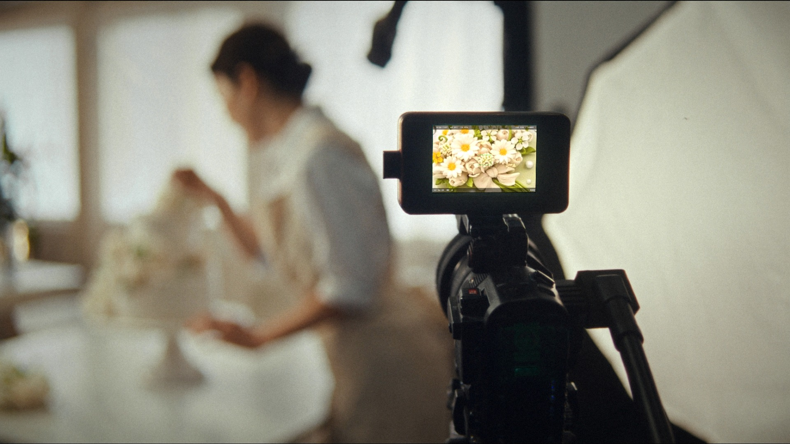
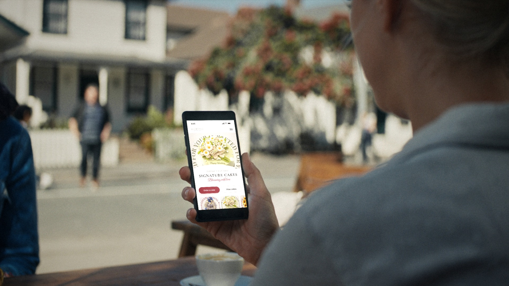
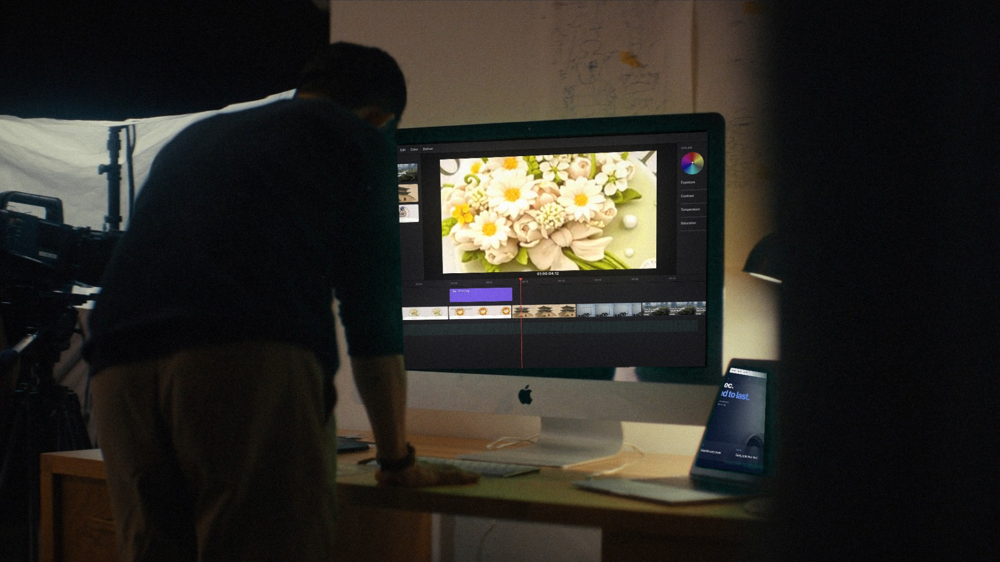
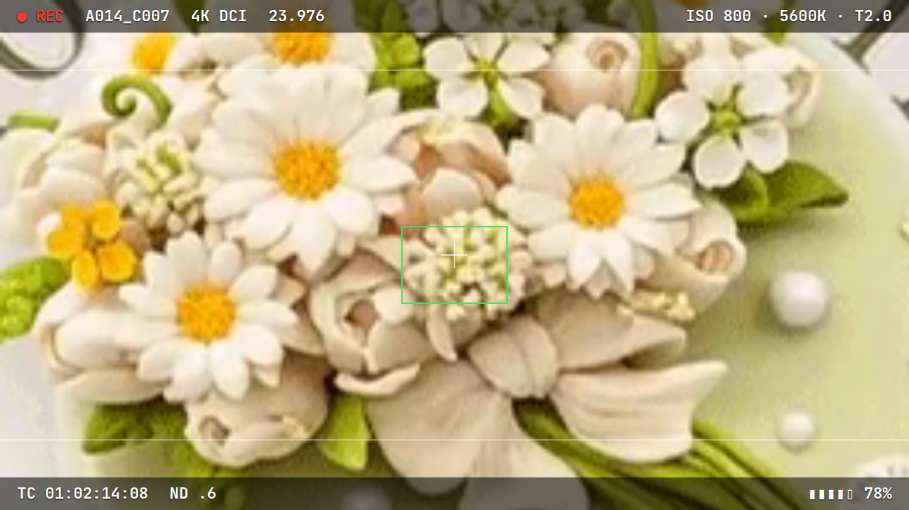

촬영부터,0:00–0:03
웹사이트까지.0:03–0:06.5 손님은 휴대폰으로 가게를 찾습니다.0:06.5–0:10
손님은 휴대폰으로 가게를 찾습니다.0:06.5–0:10 작은 가게부터 큰 기업까지,0:10–0:13.5
작은 가게부터 큰 기업까지,0:10–0:13.5 첫인상은 웹사이트에서 시작됩니다.0:13.5–0:17
첫인상은 웹사이트에서 시작됩니다.0:13.5–0:17
한 번 제작, 매달 나가는 관리비 0원.0:17–0:21약 21초 무한 반복(컷당 3~4초 — 소리 없이 자막 한 줄과 화면을 읽기에 충분한 길이, 마지막 컷만 4초) · 배경 오클랜드, 주인공 한국인, 주변인 현지인
후킹: 첫 프레임이 촬영 중인 카메라 모니터(REC) → 같은 케이크가 손님 휴대폰 속 사이트로 매치컷 = "영상도 찍고 사이트도 만드는 곳"이 3초 안에 읽힘 · 마지막 편집 화면의 케이크가 다시 첫 컷 모니터로 이어져 이음매 없이 반복
소리 없는 영상: 자막은 영상에 굽지 않고 사이트에서 HTML로 표시(선명·수정 쉬움) · 휴대폰 화면은 스크롤·버튼 누름 등 움직임으로 전달 · 자막 문구는 새로 쓴 초안

촬영부터,0:00–0:03
웹사이트까지.0:03–0:06.5손님은 휴대폰으로 가게를 찾습니다.0:06.5–0:10작은 가게부터 큰 기업까지,0:10–0:13.5첫인상은 웹사이트에서 시작됩니다.0:13.5–0:17
한 번 제작, 매달 나가는 관리비 0원.0:17–0:21


